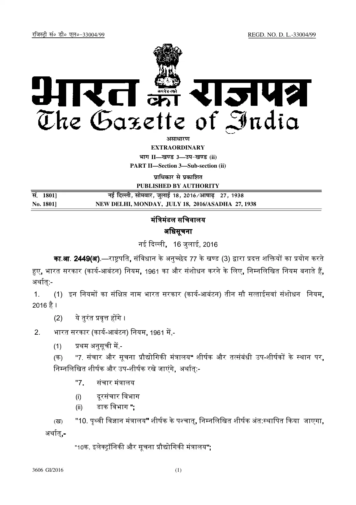
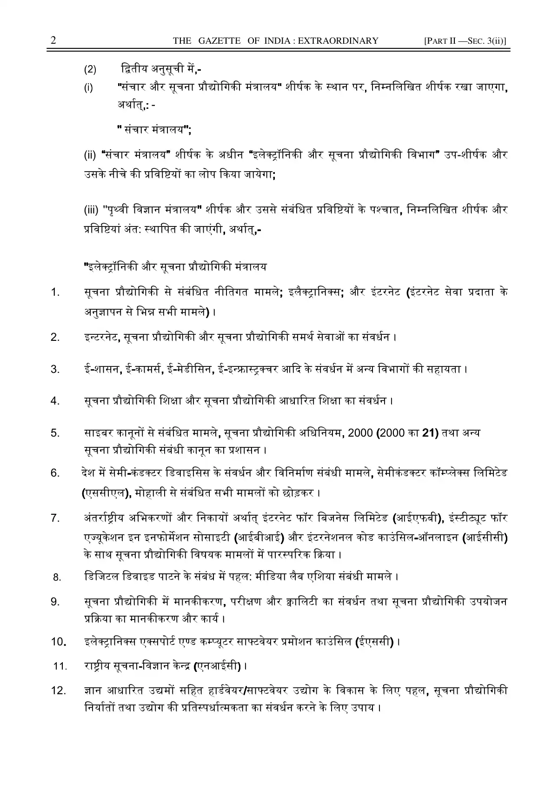
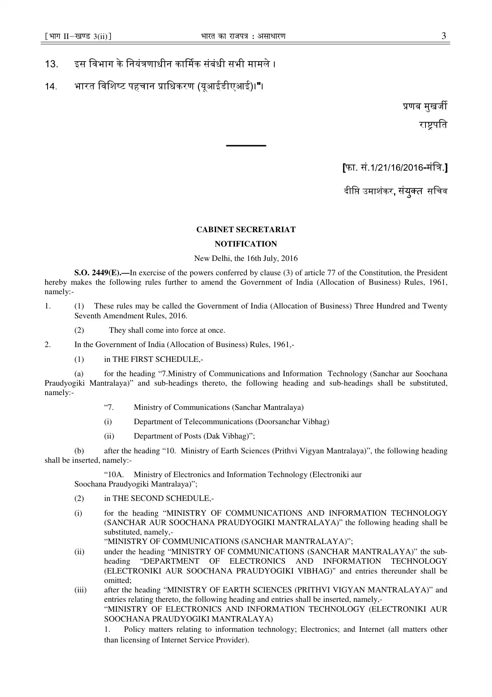
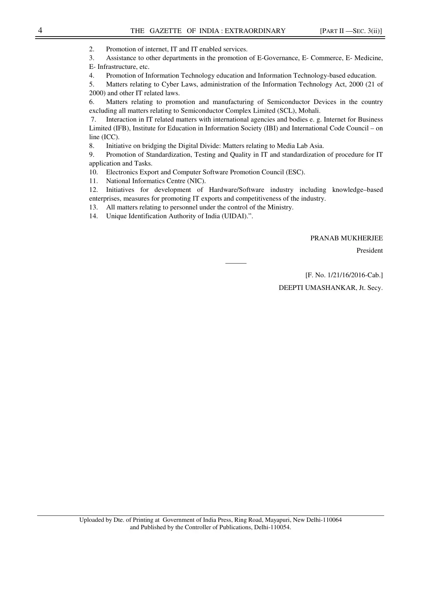

Amendment #327 (S.O. 2449(E), 2016)
5 changes: 2 to the First Schedule, 3 to the Second Schedule. 5 applied
What it did to the ministries
- splitCommunications and IT divide: Electronics & IT becomes a ministry. change 1, 2, 3, 4, 5 · histories: Communications & IT, Communications, Electronics & IT
The order, page by page
Page 1 of 4

Page 2 of 4

Page 3 of 4

12345Schedule 1 › Ministry of Communications and Information Technology
- 7. Ministry of Communications
- i. Department of Telecommunications
- ii. Department of Posts
applied at schedule 1 › ministry 7 in the Rules after #327
after Schedule 1 › Ministry of Earth Sciences
- 10A. Ministry of Electronics and Information Technology
applied at schedule 1 › ministry 10A in the Rules after #327
Schedule 2 › MINISTRY OF COMMUNICATIONS AND INFORMATION TECHNOLOGY
- MINISTRY OF COMMUNICATIONS
applied at schedule 2 › ministry MINISTRY OF COMMUNICATIONS in the Rules after #327
Schedule 2 › MINISTRY OF COMMUNICATIONS › DEPARTMENT OF ELECTRONICS AND INFORMATION TECHNOLOGY
applied at schedule 2 › ministry MINISTRY OF COMMUNICATIONS › department C in the Rules after #327
after Schedule 2 › MINISTRY OF EARTH SCIENCES
- MINISTRY OF ELECTRONICS AND INFORMATION TECHNOLOGY
- 1. Policy matters relating to information technology; Electronics; and Internet (all matters other than licensing of Internet Service Provider).
- 2. Promotion of internet, IT and IT enabled services.
- 3. Assistance to other departments in the promotion of E-Governance, E- Commerce, E- Medicine E- Infrastructure, etc.
- 4. Promotion of Information Technology education and Information Technology-based education.
- 5. Matters relating to Cyber Laws, administration of the Information Technology Act, 2000 (21 of 2000) and other IT related laws.
and 9 more
- 6. Matters relating to promotion and manufacturing of Semiconductor Devices in the country excluding all matters relating to Semiconductor Complex Limited (SCL), Mohali.
- 7. Interaction in IT related matters with international agencies and bodies e. g. Internet for Business Limited (IFB), Institute for Education in Information Society (IBI) and International Code Council – on line (ICC).
- 8. Initiative on bridging the Digital Divide: Matters relating to Media Lab Asia.
- 9. Promotion of Standardization, Testing and Quality in IT and standardization of procedure for IT application and Tasks.
- 10. Electronics Export and Computer Software Promotion Council (ESC).
- 11. National Informatics Centre (NIC).
- 12. Initiatives for development of Hardware/Software industry including knowledge–based enterprises, measures for promoting IT exports and competitiveness of the industry.
- 13. All matters relating to personnel under the control of the Ministry.
- 14. Unique Identification Authority of India (UIDAI).
applied at schedule 2 › ministry MINISTRY OF ELECTRONICS AND INFORMATION TECHNOLOGY in the Rules after #327
read page break
Page 4 of 4

How this document was read
From the Government of India (Allocation of Business) Rules, 1961 and their amendments, as published by the Cabinet Secretariat (cabsec.gov.in), read by orgpedia. The readings of the older scanned gazettes have known gaps.